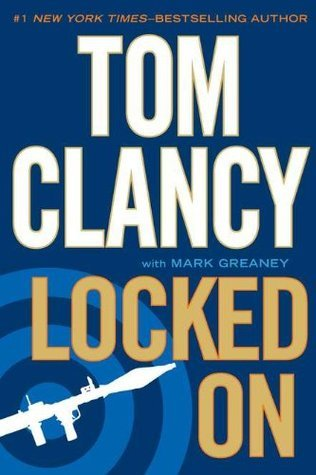

"Locked On"
- Read on 2012-08-24
- Rating: ️️️️️
- Format: 🎧 (17 hours 25 minutes)
Tom Clancy's fanciful world of Jack Ryan being everything he ever wants to be, and things always getting tied into pretty little bows continues with this novel. Honestly, I was okay with Jack Ryan (Sr.) being put out to pasture, and a new focus being put on Dig Chavez, the Caruso brothers, and Jack Ryan Jr. Although this book continues to focus on the latter, Sr. plays a more prominent role, and is set back up as a central figure. When Tom Clancy stopped writing books in this series (for 7 years), I feared it was because of his lack of ability to write about the Middle East, and Muslim extremists (having written most of his books about the Soviet Union, drug cartels, or the IRA). Fortunately, between Locked On and Dead or Alive, he has shown he still has the ability to write captivating novels involving America's newest favorite enemies.